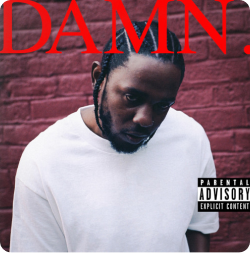
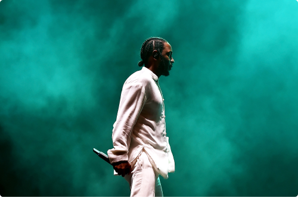
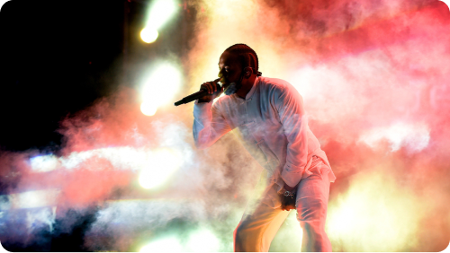

Quem é Kendrick Lamar
e qual foi a importância no álbum "DAMN."?

Kendrick Lamar é um rapper famoso dos EUA conhecido por suas letras profundas e abordagem consciente. Ele nasceu em 1987 em Compton, Califórnia. Seus álbuns, como "good kid, m.A.A.d city" e "To Pimp a Butterfly", exploram questões sociais e raciais. Lamar é elogiado por suas habilidades líricas e influência no hip-hop contemporâneo.
O álbum "DAMN." de Kendrick Lamar foi importante por suas letras profundas e reflexivas sobre dualidade humana, questões sociais e raciais. Sua variedade musical e impacto cultural o tornaram influente na música hip-hop e além, inspirando artistas e gerando discussões significativas. Ganhou prêmios e destaque por sua narrativa complexa e abordagem única.
The TOP
FIVE.
HUMBLE.
A música "HUMBLE." de Kendrick Lamar critica a ostentação e enfatiza a importância da humildade genuína. Aborda pressões sociais e raciais, mostrando a luta entre autenticidade e expectativas externas. A mensagem é sobre encontrar realização e integridade apesar das contradições da sociedade.
DNA.
"DNA." do Kendrick Lamar é uma música que aborda a identidade e força interior. Usando a metáfora do DNA, Lamar explora sua história e conexões genéticas. A música é enérgica e autoconfiante, falando sobre superar desafios e afirmar autenticidade. É uma canção marcante sobre orgulho cultural e afirmação pessoal.
LOAYLTY.
A música "LOYALTY." de Kendrick Lamar aborda o tema da lealdade e confiança em relacionamentos, considerando traição, reciprocidade e complexidades humanas. A colaboração com Rihanna amplia as perspectivas. A canção explora como é desafiador manter a lealdade em um mundo onde a desonestidade é prevalente.
ELEMENT.

"ELEMENT." do Kendrick Lamar aborda a autenticidade e a resistência perante dificuldades. Ele destaca sua força diante das adversidades e critica quem tenta prejudicá-lo. A música também explora a realidade implacável e a importância de ser verdadeiro consigo mesmo.
LOVE.
"LOVE." de Kendrick Lamar fala sobre o amor e relacionamentos românticos, explorando as emoções, a atração e os desafios presentes. A colaboração com Zacari enriquece a narrativa. A música é uma reflexão sincera sobre as complexidades do amor.